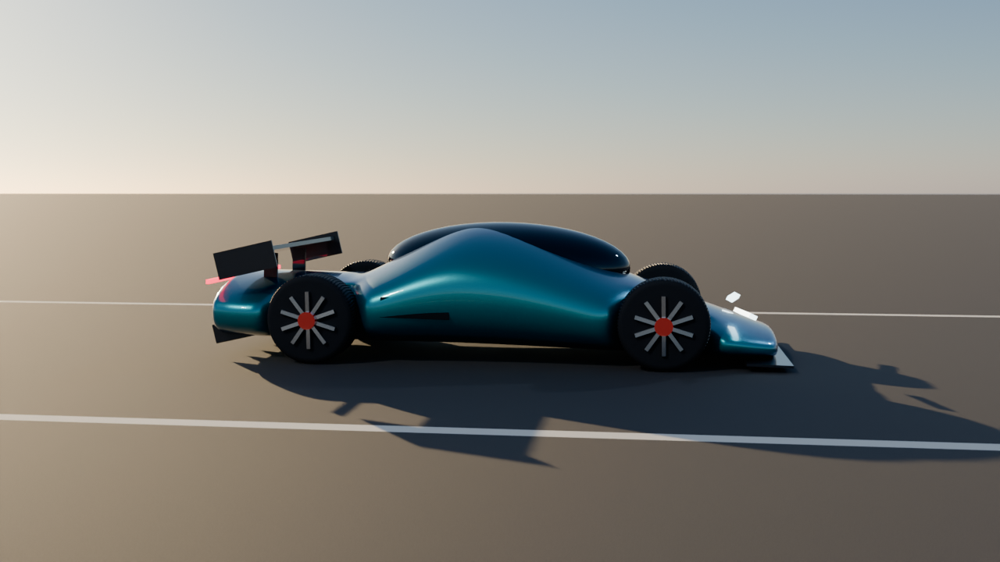
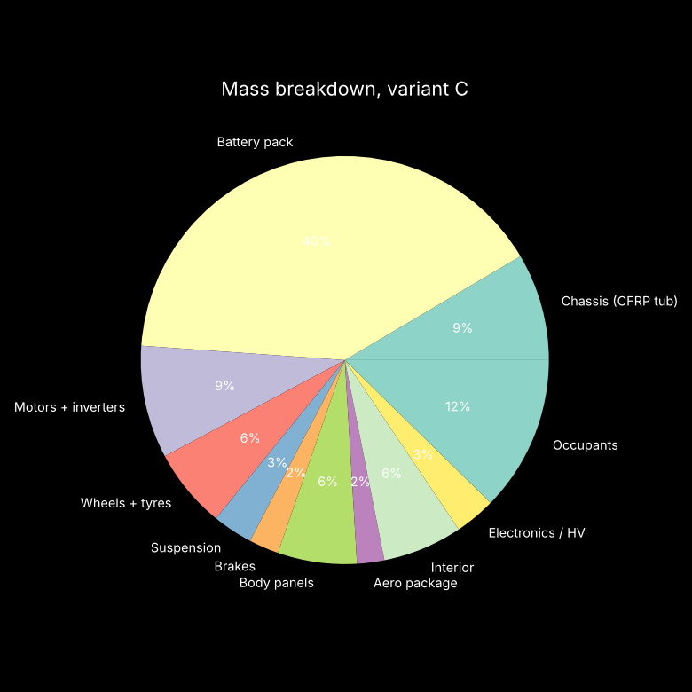

HYPERCAR-X
A parametric quad-motor electric hypercar platform: one parameter table drives the CAD model, the physics, the simulator and every number in this deck.
Jaineil Rana · github.com/jaineil32624/hypercar-x
Hero renderModelled, textured & animated in Blender 5.2

- Lofted super-ellipse body (48 sections × 28) with wheel-arch carving, subdivision + weighted normals
- Hierarchical rig: root → body rig (pitch / roll / heave) → suspension → steer → spin per corner
- Active rear wing on its own pivot: DRS flat at speed, 38° air-brake under braking
- 300-frame drive animation: launch, squat, brake dive, steer, tracking camera with DoF
AnimationLaunch → brake → turn-in
MaterialsAdvanced procedural shading → baked PBR
Layer-weight colour shift (teal → deep blue), 1800-scale Voronoi metal flakes on base normal, noise orange-peel on the clear-coat normal, coat weight 1.0
Two orthogonal wave bands mixed by a checker → weave mask, anisotropic 0.6, bump from weave, glossy coat
Object-space atan2 angle drives a sine groove only inside the tread mask; sidewall/tread roughness split; micro-noise bump
Stretched noise (600:4) → roughness streaks, anisotropic 0.85
Voronoi holes as mask + inverted bump, heat-tinted noise ramp
Diffuse colour, roughness and tangent normal baked per part → 15 maps (1–2K) → image-based materials → GLB for the web simulator
Bake pipelineFrom node graph to game-ready asset
Shared wheel meshes mean one bake serves all four corners. Procedural materials are kept for offline renders; baked ones are swapped in only for export.
SpecificationVariant C, Electric Hypercar
Parametric modelChange one number, everything updates
params.json
├─ Vehicle_Length / Width / Height
├─ Wheelbase, Track_Width_Front/Rear
├─ Wheel_Diameter, Wheel_Width
├─ Chassis_Thickness, Tub_Section_Height
├─ Motor_Power, Motor_Torque, Gear_Ratio
├─ Battery_Capacity, Pack_Specific_Energy
├─ Spring_Rate, Motion_Ratio, Damping_Ratio
├─ Brake_Disc_Diameter, Regen_Fraction
└─ Drag_Coefficient, Lift_Coefficient
↓
mass · CG · aero · launch · braking ·
suspension · FEA · range · cost · sim+20 kWh battery → +95 kg mass → CG, inertia, launch, braking, ride frequency and range all recompute. CI re-runs every simulation on every push.
Five variantsA Urban · B Track · C Electric Hypercar · D Off-Road · E Autonomous 2035, each a set of overrides on one base table.
DynamicsLaunch simulation

Fx = min(T·G·η / r , P·η / v , μ(mg + ½ρv²CLA)) − ½ρv²CDA − Crrmg
a = Fx / (1.04 m)
Time-stepped at 2 ms. Torque-limited, then traction-limited (aero load grows grip), then power-limited. 1.04 accounts for rotating inertia.
Aerodynamics & brakingGrip you get from air
D = ½ρv²CDA · L = ½ρv²CLA
At 250 km/h: drag 1645 N, downforce 4821 N (≈ 40 % of weight). Lateral capacity rises from 1.43 g at 100 km/h to 1.86 g at 250 km/h.
60-0 mph 27.6 m · 100-0 mph 72.4 m
Ideal front brake bias at 1.2 g: 64 % (1.91 kN load transfer)
100-0 stop dumps 1.30 MJ; 35 % regen leaves a 15 °C disc rise per stop on carbon-ceramic.
Suspension & steeringPushrod double wishbone
StructuresChassis FEA: CFRP monocoque

40-element Euler–Bernoulli stiffness-matrix model of the tub box section under a 3 g bump.
- Max deflection 0.249 mm, matches closed form 5wL⁴/384EI to <1 %
- Max bending stress 4.5 MPa vs 600 MPa allowable
- Torsional stiffness (Bredt–Batho) 45.9 kN·m/deg, hypercar class
The bending FoS is huge on purpose; torsion, crash and bonded joints drive the real tub layup.
PlatformFive variants compared
| Metric | A Urban | B Track | C Electric | D Off-Road | E Auto 2035 |
|---|---|---|---|---|---|
| Mass kg | 1294 | 1139 | 1297 | 1520 | 1344 |
| Power kW | 450 | 1250 | 1100 | 620 | 800 |
| 0-60 mph s | 2.74 | 1.77 | 2.10 | 3.08 | 2.28 |
| ¼ mile s | 9.93 | 7.35 | 8.07 | 10.12 | 8.65 |
| 60-0 mph m | 36.3 | 22.9 | 27.6 | 40.0 | 30.1 |
| Lateral g @250 | 1.12 | 3.20 | 1.86 | 0.95 | 1.57 |
| Range km @100 | 624 | 392 | 757 | 509 | 1055 |
| Ride Hz | 1.80 | 3.01 | 2.33 | 1.42 | 2.29 |
| Est. BOM $ | 156k | 244k | 243k | 175k | 282k |
Swappable partsTrade-offs, not free upgrades
21" carbon: −18 kg unsprung, sharper / $22k, kerb-crack risk
18" rally: absorbs rough roads / +22 kg, less grip
Semi-slick: +15 % grip / wet-unsafe, 8k km life
Eco low-RR: +8–10 % range / longer stops
Track pack: 2.5× downforce / more drag, less range
No wing: lowest drag / light rear at speed
Quad 1450 kW: sub-2 s potential / traction-limited, thermal derate
Dual 600 kW: −48 kg, cheaper / no per-wheel vectoring
80 kWh LFP: −90 kg, long life / −25 % range
130 kWh solid-state: lighter + more range / not production-ready
Cast iron: cheap, cold bite / +20 kg unsprung, fades
Carbon-ceramic: fade-free / $15k to replace
Every swap is live in the simulator garage, with an animated jack-up swap and an instant stat delta.
MassWhere the kilograms go

The pack is 40 % of the car. Solid-state cells (variant E, 0.32 kWh/kg) are the single biggest lever on weight.
Reliability & riskWhat could go wrong
Series-system MTBF 10,550 h; R(5000 h) = 0.62. The inverter is the top contributor (9 failures per 10⁶ h) → redundant gate drivers + thermal derating.
- Thermal: 1.1 MW for >40 s needs active pack + motor cooling
- Cost: $243k BOM estimate, CFRP tub + ceramics dominate
- Model fidelity: first-order physics; needs CFD, crash FEA & test validation
SoftwareRepository & CI
hypercar-x/ ├─ params.json master parameter table ├─ hypercar/model.py physics + FEA engine ├─ hypercar/report.py variants → tables & plots ├─ tests/ propagation & bounds tests ├─ blender/ .blend + 15 baked PBR maps ├─ docs/index.html drivable 3D simulator ├─ docs/presentation.html └─ .github/workflows/ CI: test + simulate
Three.js bicycle model with saturating tyres, friction circle, aero drag & downforce, ¼-mile timing, tyre smoke, swappable parts, and the Blender GLB. The simulator's 0-60 matches the Python model (≈2.1 s).
RoadmapToward 2035
Parametric model, sim, Blender asset
OpenFOAM CFD, shell FEA of tub, lap-time sim
Scale 1:10 RC prototype, telemetry digital twin
Solid-state pack, L4 autonomy, OTA chassis tuning